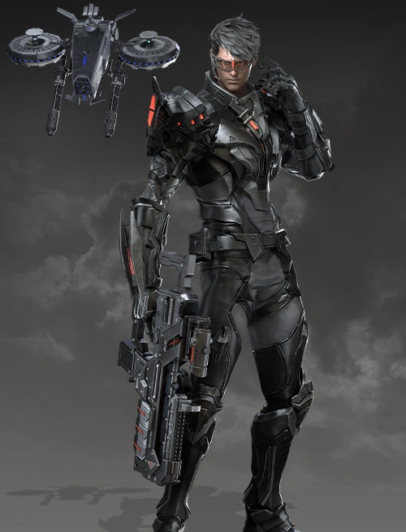

Machinist Builds

Evolutionary Legacy Build
Combining Comet Strike with Echelon Beam and Laser Blade is a core gimmick, as it boosts these skills in some way. It's worth mentioning that Thruster Move (Hypersync Spacebar) works as an alternative to Comet Strike, triggering the same combo with the respective skills.
Activating his identity grants you the following effects for its entire duration:
15% Attack Speed
30% Move Speed
Reset all Sync Skill cooldowns on activation
Each Sync skill used in Hypersync state reduces the cooldown of the others by 0.5s
Synergy application as an aura during Hypersync mode.
Evo Build Questions?
Arthetenian Technology Build
There's no strict rotation with this build, you just need to remember to keep up your Synergy (Pulse Fire) and move speed self buff (Mobile Shot). Try to keep your
Conviction +
Judgment skills paired, and use Annihilation Mode with 4/5 stacks of Auto Shredder (after the opener).
Avoid casting Annihilation Mode and Neo Fire right after a [Drone] skill, as it will cancel it by recalling the drone for the [Joint] skill.
Use Bullet Hail and Pulse Fire whenever available as fillers and to upkeep your Party Synergy.
Arthetenian Build Questions?
